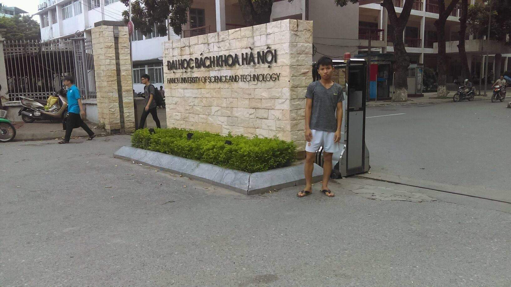
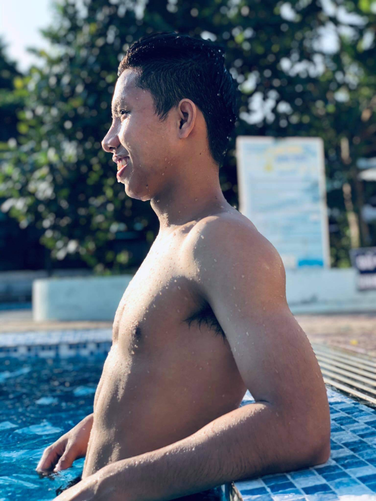
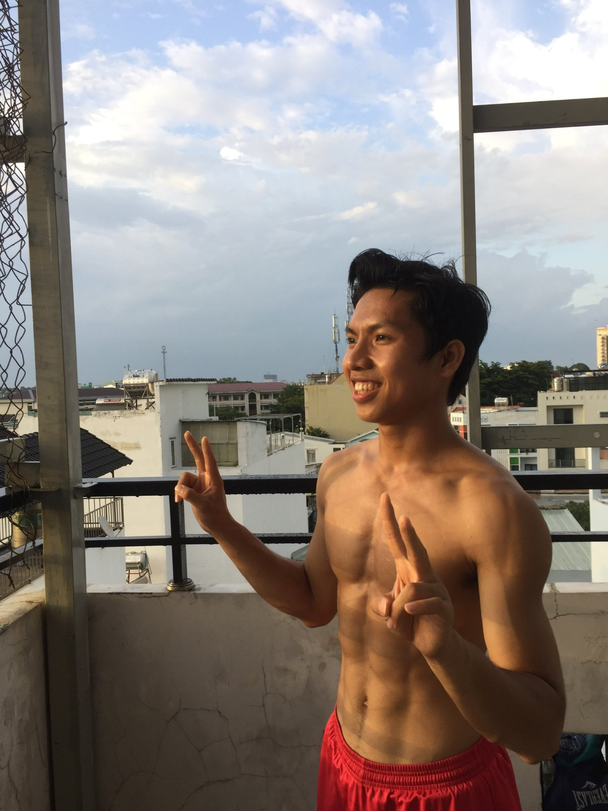
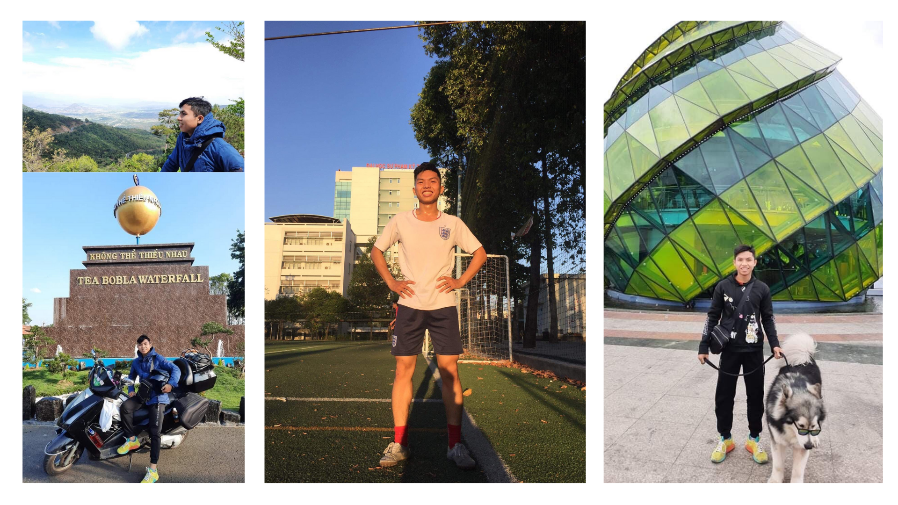

Phạm Minh Tú sinh ra trong một gia đình nghèo tại miền quê Ninh Bình, hiện tại đang học tập tại Trường Đại học Bách Khoa TP HCM. Những câu chuyện vượt khó của anh để lại cho chúng ta nhiều bài học và nguồn cảm hứng. Câu chuyện ngay bên dưới sẽ cho chúng ta cảm nhận sâu sắc hơn về người con trai ấy.
Lời giới thiệu
Tác giả: Phạm Minh Tú, người truyền cảm hứng bằng câu chuyện.
Sinh ra trong một gia đình nghèo, mẹ của anh là người làm rất nhiều công việc như: Nông dân hay đi rao bán chè, sau này khi có xí nghiệp may nên mẹ làm thêm cả công nhân,vv,…
Bố anh cũng trải qua rất nhiều công việc để có đủ tiền sinh hoạt cho gia đình: Thợ hồ, phụ lái tàu, bảo vệ,vv,…
Tuổi thơ của anh không được chiều chuộng trong vòng tay của ba mẹ, hay một mái ấm thực sự bởi cái nghèo khó đã làm nảy sinh những cuộc cãi vã liên tục trong gia đình, anh chứng kiến những lần đánh cãi nhau của ba mẹ tới mức nó trở thành một tệp kí ức đầy ám ảnh mỗi khi anh kể lại.
Trong những năm tháng tuổi thơ, anh là một kẻ hỗn xược và vô cùng nghịch ngợm, có lúc đã gần như đi vào hố sâu tăm tối trong xã hội, anh là một trong những học sinh được đánh giá tệ nhất trong suốt 10 năm ngồi trên ghế nhà trường, là học sinh duy nhất bị đình chỉ học trong trường cấp một, luôn nằm trong danh sách đen của nhà trường và thi lại liên tục.
Cuộc đời anh gắn liền với những vụ ẩu đả triền miên.
Biết bao lần anh thoát chết trong những năm tháng thủa nhỏ ấy bởi sự nghịch ngợm. Có lần anh bị cuốn ra cửa sông đáy nằm bắt ngang giữa Ninh Bình và Nam Định, may mắn có người cứu khi chỉ còn trong gang tấc là sẽ bị nước mạnh cuốn đi. Hay một lần năm tuổi đàu nghịch vô tình bị tấm bê tông lớn đổ vào người, may mắn thoát kịp ra ngoài, nhưng bị kẹt lại ngón chân khiến phải khâu gần mười mũi.
Một lần khi anh Nhập viện Bạch Mai Hà Nội để khám bệnh liên quan tới não do căng thẳng, stress bởi sự cố gắng cực đoan của bản thân. Bác sĩ đã nói anh có nguy cơ đột ngụy rất cao bởi những gì anh đang làm với sức khỏe.
Bức hình chụp khi anh đang lên hà nội Khám bệnh chỉ 49kg và cực kì ốm yếu…

Bước ngoặt tới với anh là khi anh đi làm thuê một khoảng thời gian ngắn, chính một vài công việc lúc đó đã cho anh nếm trải những mùi vị đắng cay đầu tiên trong cuộc đời…
Và sau đó, anh bắt đầu thay đổi và liên tiếp đạt được những thành quả đáng nhớ, như nằm trong đội tuyển thi học sinh giỏi Hóa của trường, là một học sinh luôn kém cỏi và thành tích tệ hại nhưng đã lột xác để có thể thi đậu vào trường Đại Học Bách Khoa Hồ Chí Minh, hay cải thiện sức khỏe của mình một cách ngoạn mục.


Rồi những năm tháng thăng trầm sau đó đã dần giúp anh tìm ra được mục đích sống của bạn thân, anh luôn cảm thấy hạnh phúc với những điều anh nỗ lực dù đã không ít lần anh nghe mọi người nói rằng điều anh làm rất ngớ ngẩn và anh nên từ bỏ ngay ước mơ của mình.
Cuộc đời anh là câu chuyện của anh!
Những thay đổi của anh khiến những người biết câu chuyện có thật đó sẽ được truyền cảm hứng và một nguồn động lực, bởi nó đơn giản và đời.

Sẽ chẳng thể đủ thời gian để chia sẻ biết bao câu chuyện, nhưng tôi biết bạn sẽ rất cần một nguồn cảm hứng cho cuộc đời của mình, vì thế tôi tin anh ấy hoàn toàn có thể giúp bạn.
Dưới đây là cuốn sách được thiết kế khác biệt hoàn toàn với tất cả những tác phẩm bạn từng đọc.
Xin mời bạn!
Cuốn sách: Cuộc đời tôi - Cuộc đời bạn
Cuốn sách là sự kết hợp hai trong một bởi những ý tưởng sáng tạo nhằm giúp bạn tìm ra chính mình trong một thế giới đầy sự hỗn loạn này.
Nó được thiết kế dành riêng cho cuộc đời bạn, để bạn có thể mang theo bên mình trong hành trình đầy sóng gió hay thử thách phía trước, tôi biết để cuốn sách làm bạn song hành với đọc giả thì giá trị của cuốn sách thực sự phải có thật, phải mang lại những bước tiến tích cực trong cuộc đời.
Chính vì vậy những lời bình của một số nhân vật sau sẽ làm bạn thấy bất ngờ và vững tin hơn vào lựa chọn cuốn sách này.

Trích phần I cuốn sách Cuộc đời tôi-Cuộc đời bạn.
Phần 1: Cuộc đời tôi
Con dao móng sắc lịm phi thẳng về phía trước, cách tôi một mét là chiếc giường cũ nơi mẹ tôi đang trùm chăn lại, máu bắt đầu chảy ra ở mắt cá chân của mẹ, tôi hoảng loạn gào khóc, tôi không biết phải làm gì… Máu đã chảy ra rất nhiều trên giường và tôi chạy đến ôm choàng lấy mẹ, “nhanh lên lấy cho mẹ ít giấy dưới bếp để mẹ cầm máu con”, nước mắt của mẹ chảy ra trong một khung cảnh kinh hoàng mà tôi chứng kiến, tôi mới chỉ bốn tuổi và tôi không nhớ là ông say rượu hay bởi một lí do nào… Ông chưa từng giải thích cho tôi về hôm đó và tôi cũng chưa bao giờ hỏi ông tại sao lại làm vậy với người vợ của mình. May mắn là mẹ tôi còn sống và ông không phải đi tù vì tội bạo lực gia đình nhưng những vết hằn đó và nhiều câu chuyện đau đớn khác sẽ chẳng thể phai nhòa trong chính kí ức của tôi, cuộc đời của tôi bắt đầu là như thế.
…………………